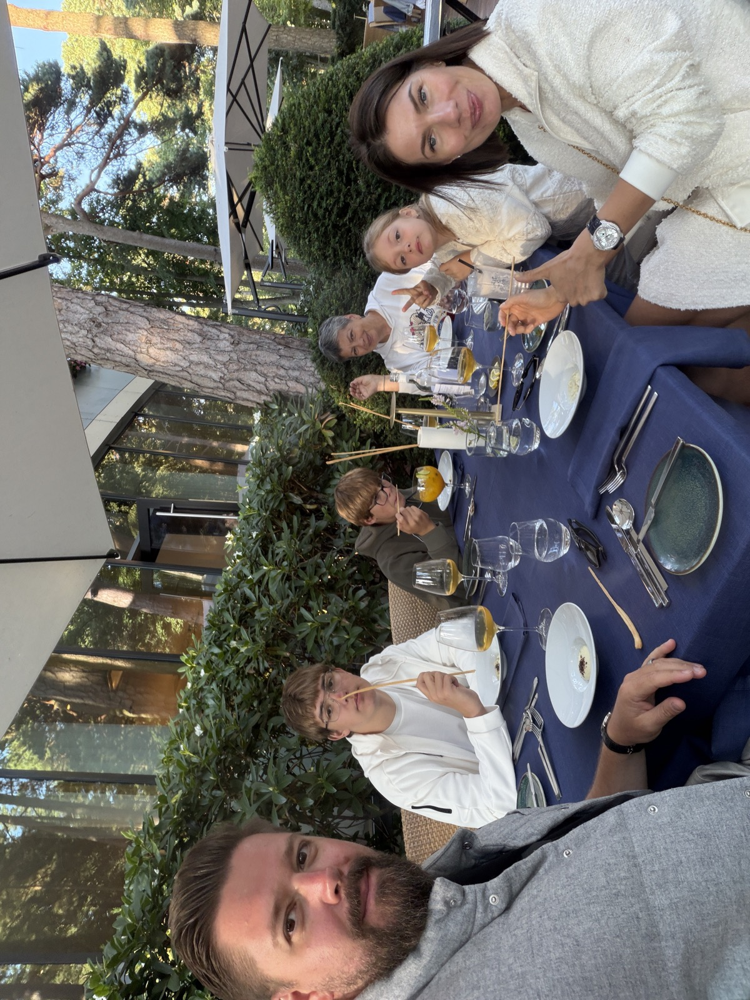
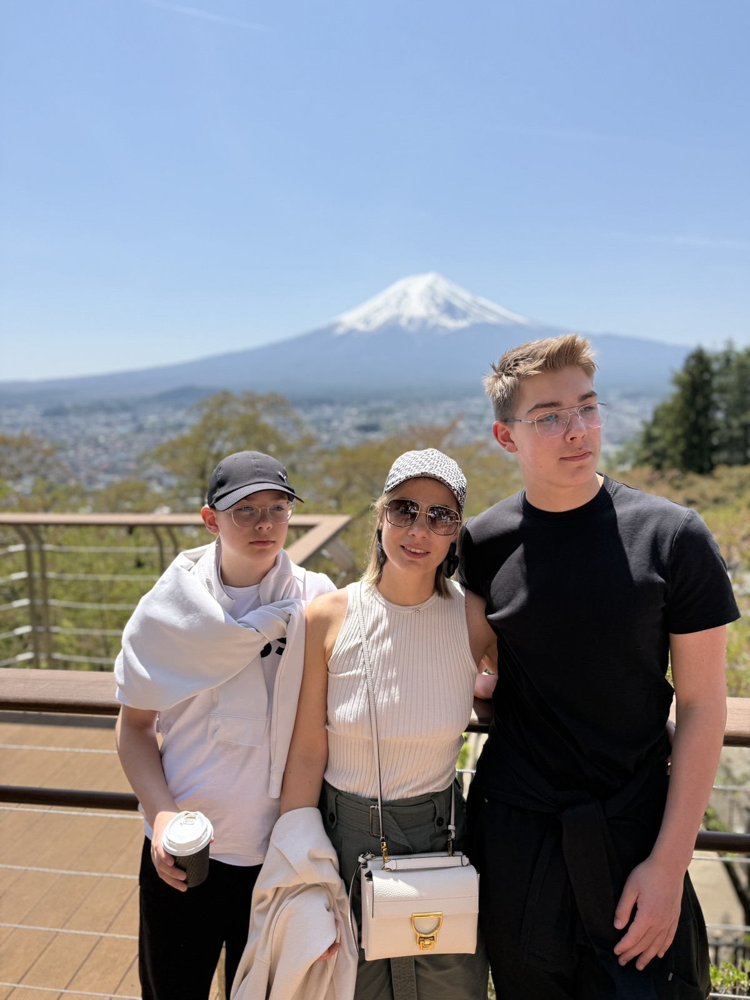
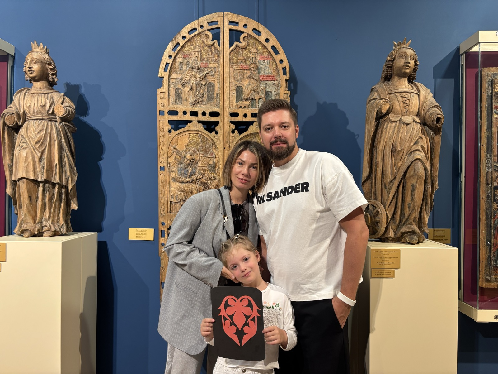
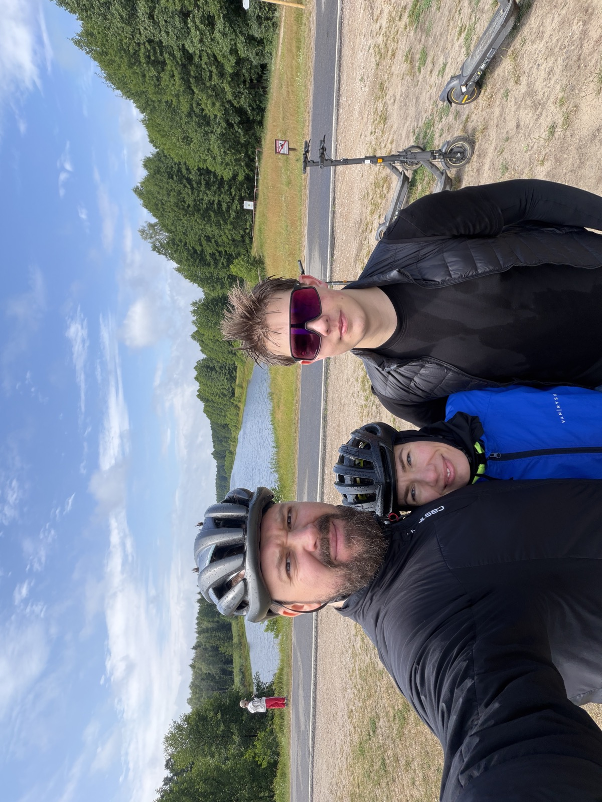
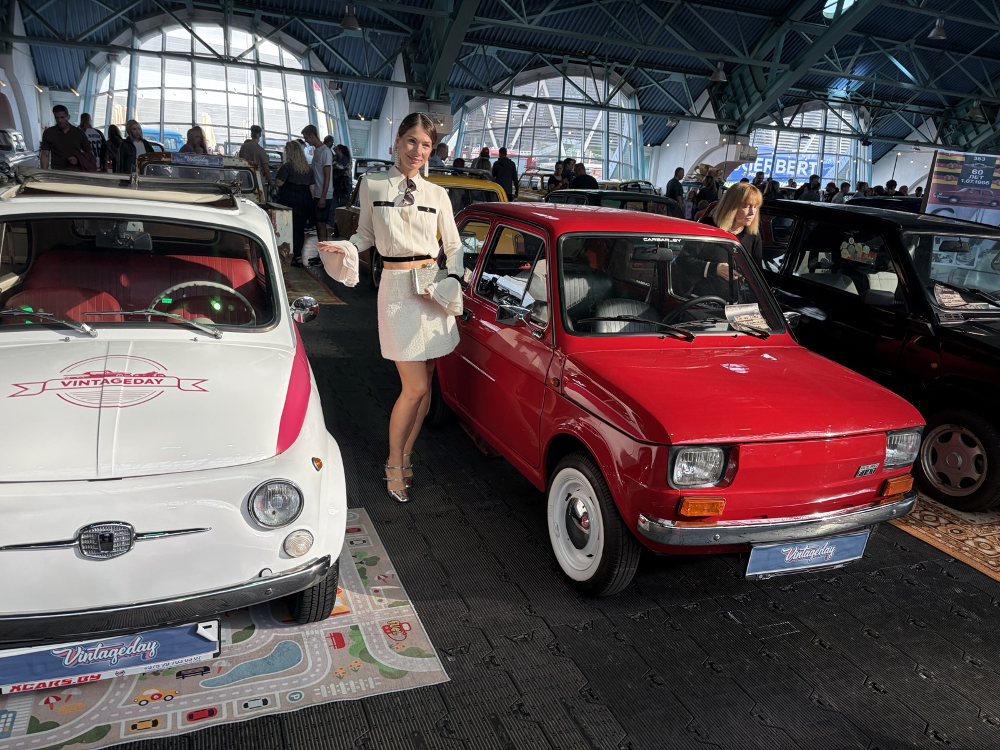
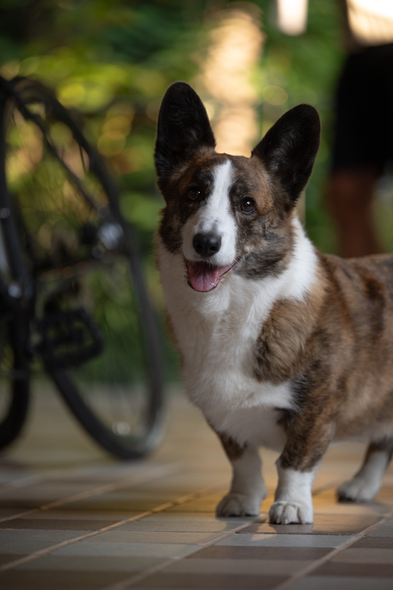
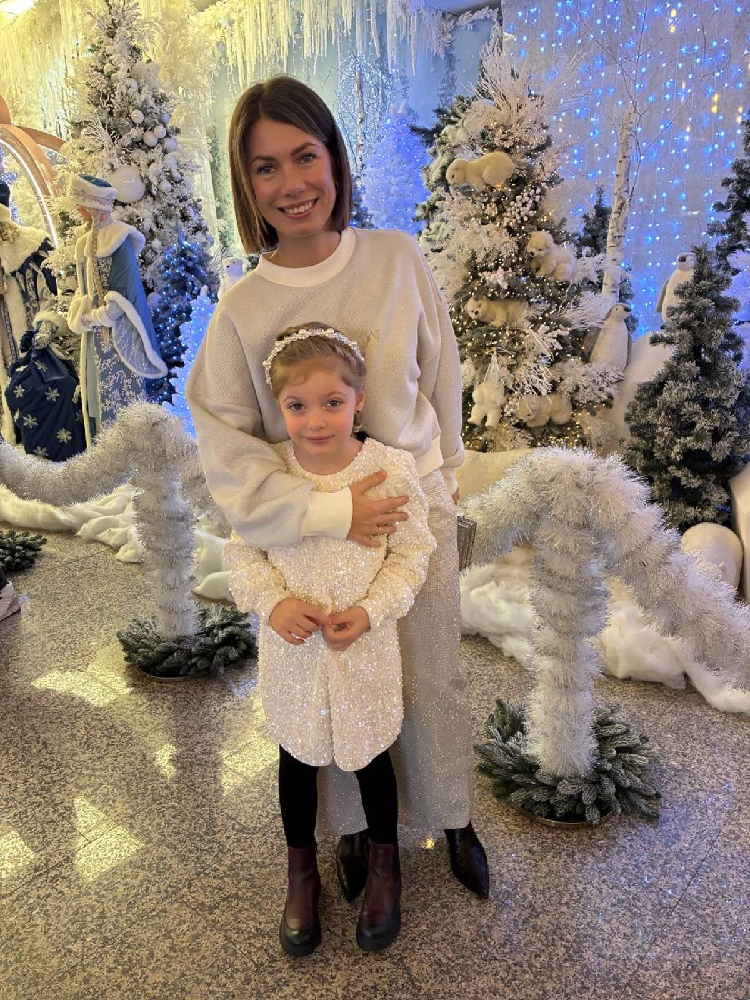

Лидер и стратег, для которой главный проект в жизни — семья.
Моя самая важная команда — дома. Два сына, 16 и 13 лет, и дочка-лапочка — обожаю свою семью и считаю её своим главным проектом в жизни. Мы много путешествуем вместе и всегда в поиске новых впечатлений, а не просто галочек на карте.
В остальное время — спортзал и велосипед: люблю, когда тело двигается не меньше, чем голова на работе. А если выбирать между музеем и диваном — всегда выберу музей: искусство, театры, ретроавтомобили — то, что заряжает иначе, чем рабочие таблицы.
Дома у нас настоящий живой уголок: любимая всеми собака, которая умудряется перехитрить нас всех, муравьиная колония, когда-то жили тараканы и хамелеон, менявший цвет прямо на глазах. В общем, в нашем доме вечно что-то цветёт, ползает или требует прогулки.

Пятнадцать с лишним лет и шесть компаний — но суть не меняется: превращать стратегию в результат, а команду — в тех, кто доводит дело до конца.
Строю стратегию роста там, где нужно быстро найти рабочую модель: от привлечения пользователей до оптимизации воронки конверсии. Head of Growth в HYPERVSN, Head of E‑commerce Strategy and Growth в Amasty.
Руковожу компанией целиком — от найма до финансового результата. CEO в ITlect, CIB Software и aheadWorks: три компании, один подход — дисциплина и забота о команде одновременно.
Строю бренд и рыночную стратегию: от первых шагов в Oxagile до нынешней роли CMO в RocketData, где отвечаю за то, чтобы бизнес был там, где его ищут клиенты.
Работаю на стыке продукта и данных: как Product Owner в HYPERVSN запускала 3D-голографическую платформу, сейчас в RocketData управляю данными и отзывами более чем в 30 картографических и репутационных сервисах.
MBA, 15+ лет в e-commerce и SaaS, опыт CEO, CMO и Head of Growth, команды от 5 до 50+ человек, рынки от Беларуси до США. Но главный ресурс — умение быстро разобраться в новой индустрии и выстроить в ней рабочую стратегию.
Несколько строк из рекомендаций, которые накопились за годы совместной работы.
Natallia is one of the most delightful people I had the pleasure of working for in my career. Her humor and empathy fostered a comforting work environment.
Under Natalia's leadership aheadWorks became one of the best Magento partners. Natalia's business and people skills made her an ideal leader or business partner.
Natallia has not only sharp strategic vision, but also patience, dedication and close attention to details. I am sure that she will go far in life.
She ran it with structure and discipline that I would expect from a seasoned executive.
Семья, путешествия, велосипед, ретроавтомобили и один очень хитрый пёс.






«Сильный бизнес строят цифры и стратегия. Крепкую жизнь — семья, которая рядом, что бы ни происходило». — Наталья Кукурузина